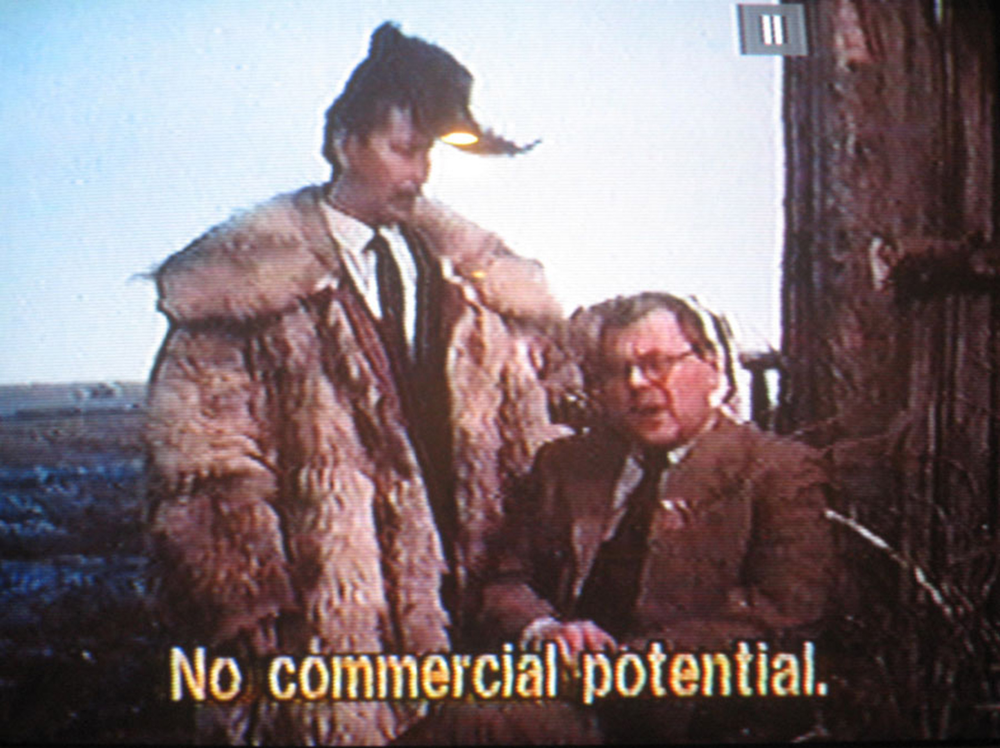
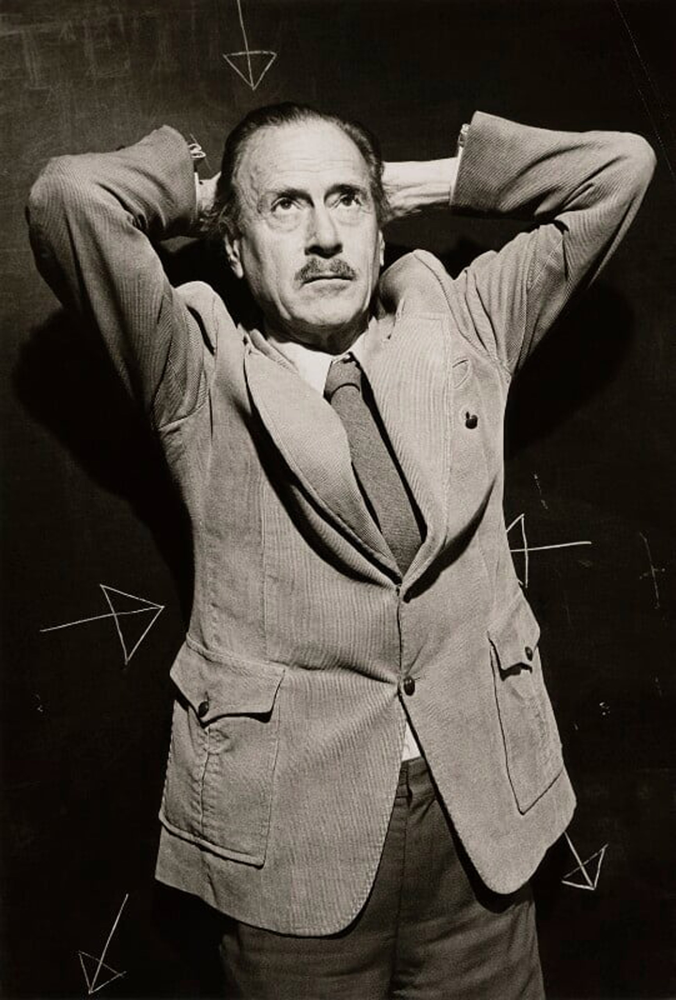
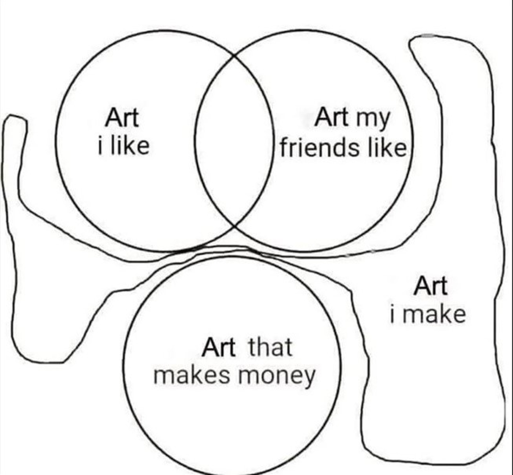

전시 보러 갈래? - 정지돈과 함께 (2)
<4. 이론과 제도가 작업자에게 주는 영향에 관하여
5. 《굿-즈 2015》와 2023년 사이 담론장에 관하여
6. 과거를 지나 현재, 공유될 수 있는 ‘좋음’에 관하여
4. 이론과 제도가 작업자에게 주는 영향에 관하여
정지돈: 되게 좋은 이야기네요. 이렇게 또 얻어갑니다. 말씀 들으면서 그런 생각이 들었어요. 저는 이론 보는 거 좋아하거든요. 소위 말하는 이론이나 철학 보는 거 좋아하는데 저한테는 사실 이론이 이론처럼 안 느껴지고, 언제나 작품처럼 느껴져요.
이론의 역할이 세계를 설명하는 것 같지만 사실 그렇다기보다는... 예전에 제가 배웠던 시인 선생님이 수업 시간에 그런 얘기를 했어요. 이론은 하나의 ‘성’이라고 보면 된다. 그냥 열심히 잘 축조한 성. 그래서 우리는 이론이라고 생각하면 어디에 대입을 해서 거기에 대한 답을 도출하고 설명이 되어지는 뭔가라고 생각하지만 그렇다기보다는 자족적인 성에 가깝고 저희는 그걸 보면서 성 잘 지었네~ 하면 되는 거죠. 그 성을 보는 일이 내가 내 성을 짓는 데에 도움이 되기도 하고요.
마찬가지로 작가의 말, 스테이트먼트라는 것도 작품을 설명하기 위한 것이라기보다 하나의 작업이라고 생각해야지 흥미롭다고 생각해요. 성격은 다르지만 이것도 작업이고 저것도 작업이 되는 순간 다양한 요소들이 연결되면서 확장성이 생기거든요. 반면에 스테이트먼트의 역할을 단순히 작품에 예속된, 설명해 주는 것으로만 생각하면 말 그대로 “아니 내가 작품으로 다 얘기했는데 더 이상 뭔 설명을 해, 설명해봤자 압축시키는 거밖에 더 돼? 나 안 해!” 이렇게 되는 거죠. 저는 그런 태도도 당연히 좋지만, 저는 그렇게 생각하지 않고 진짜 넓게는 인터뷰까지도 다 작업이다. 다 작업이 될 수 있고 작품이 될 수 있다고 생각해요. 왜냐하면 나 자체가 예술 작품을 보고 감동받는 것만큼 되게 흥미롭고 재밌는 인터뷰를 보면 그 인터뷰 자체에 엄청나게 감흥을 받잖아요. 이런 말은 진짜 이상한데.. 그러니까 모든 것이, 사실은 모든 것이 작업이다.
이론은 특히나 더더욱 그렇다고 생각해요. 하나의 예술 작품에 가까운 성격을 가지고 있죠. 예술 작업을 하는 사람으로서 저는 이론들을 하나의 예술 작업으로 바라보는 게 가장 좋아요. 그랬을 때 훨씬 더 유용하고, 훨씬 더 감흥을 많이 준다.
재훈: 아까부터 하고 싶었던 말이 있었는데요. 작품을 사람이라고 본다면 저는 어떤 전시를, 작품을 보면서 되게 멀리 간 사람을, 존나 멀리 간 사람을 보고 싶어하는 것 같아요. 그 멀리 간 사람이 어떤 이론을 먹고 자랐을 수도 있고 다른 작품을 먹고 자랄 수도 있는데, 그랬을 때 저희가 생각하는 한국에서 존나 멀리 간 사람 중에 한 명이 정지돈 작가라고 생각해서 이렇게 관심을 갖고 있는 거기도 하거든요. 그런 점에서 이론을 하나의 작품으로 접근하시는 게 재미 있어요.
정지돈: 뉴턴이 했던 유치한 말이 갑자기 생각나네요. ‘나는 그냥 거인의 어깨 위에 올라가서 보는 것뿐이다.’ 뉴턴이 당시부터 지금까지 제일 멀리 간 사람 중 한 명이지만 사실 본인은 그냥 멀리 가는 사람 위에 올라가서 본 거 뿐이라고 말한 거잖아요. 근데 재훈씨가 지금 얘기한 멀리 간다는 감각이 정확히 뭘까.. 그게 되게 궁금하다는 생각이 들어요. 옛날에 제가 어떤 작품을 보고 흥미를 느꼈을 때, 그런 표현을 사용했었던 게 기억나네요. ‘끝까지 가야 한다. 끝까지 간 거가 되게 매력적이다.’ 뭐 옛날에는 그런 수사가 있는데 지금은 그 수사가 되게 위험하고 싫거든요. 끝까지 간다는 게 되게 이상하게...
재훈: 막 피를 토하고...
정지돈: 그렇죠, 그렇죠! 그냥 막 그런 식으로 될 수가 있잖아요. 예를 들어 개념이 됐건, 어떤 시도가 됐건 어떤 작업에 대해 ‘넓게 간다’라는 수사는 아무도 안 쓰죠. 넓게 간다. 근데 ‘이런 언어 현상이 의미하는 게 도대체 뭘까?’ 라는 질문은 생각해봄직한 것 같아요. 어떤 이론이 됐건, 지금 사회에서 요구되는 어떤 윤리가 됐건 그것들에 작업 자체가 그저 포섭되고 설명되어 버리는 작업은 흥미롭지 않게 느껴지거든요. 그렇지만 한 사람이 가족, 이론, 동료 혹은 무엇에 영향을 받았던 간에 수많은 영향관계 속에 있는 건 맞고 그것들이 보이는데, 그것들이 모인 후에 이렇게 나오는 게 도대체 뭘까? 뭐지? ‘이런 걸 지금이라는 맥락에서, 지금 한국에서 내가 본 적이 있나? 이걸 설명할 수 있나?’ 이렇게 되는 지점들이 있는 작업일 때 확실히 매력적으로 느껴진다는 생각이 드네요.
근데 또 아까 승주씨가 얘기했듯이 너무 모호해서 뭘 얘기하려는지 알 수 없는 작품들은 당연히.. 싫잖아.. 싫나..? 아무튼 그런 이론이나 개념에 포섭되지 않는 지점이 있다는 말은 곧 우리가 가지고 있는 일종의 프레임에서는 설명이 안 되는 지점이 있다는 의미고, 그 지점이 좋아야 되는 거라 그게 진짜 어려운 것 같아요. 이게 가능하다면 그 작품에 대해서 우리는 많은 이야기를 주고 받을 수 있겠죠.
재훈: 작가님의 첫 소설집 『내가 싸우듯이』 마지막에 수록된 「일기/기록/스크립트」가 그렇다고 생각해요. 어느 인터뷰에서 단편 소설 「건축이냐 혁명이냐」의 제작 과정에 대해서 말씀하셨던 것도 떠오르네요. 원래 계획은 ‘이구'라는 실존 인물을 재료로 기승전결의 구조를 갖춘 드라마틱한 이야기를 써보는 것이었는데 그것이 ‘해서는 안 될 짓 같았다’고 느껴서 그렇게 쓰시지 않은 선택이요.
정지돈: 「일기/기록/스크립트」 를 책의 끝에 실은 선택에 대해서는 책이 출판되고 난 뒤에 많이 이야기했는데, 그 이후로 그것 때문에 한국의 문학평론가들에게 굉장히... 낙인이 찍혔죠.. 좋게도 찍히고 안 좋게도 찍히고..
재훈: 동료분들은 그 글에 대해 어떻게 말씀하셨어요?
정지돈: 솔뫼씨, 한기씨, 상우씨, 정연씨 같이 가까운 분들은 그냥 재밌어 했어요. 사실 여기 되게 특별한 무슨 그런 게 없는데 말이죠.. 하지만 다른 몇몇 분들 같은 경우는 되게... 되게 안 좋아했죠.
승주: 저희는 좋았어요. ㅎㅎ
정지돈: 그때 안 좋아하시던 분들의 반응은 말하기도 부끄러워요. ‘네가 그렇게 잘났냐’, ‘너 잘났다!’ 류의 반응이라서 깜짝 놀랐었어요. 이 반응들에 대해서는... 그런 생각을 해볼 수 있을 것 같아요. 내가 소설가라면 소설 쓰는 것도 작업이지만, 사실 책을 만드는 것도 작업의 일부잖아요. 그런데 사회를 보면, 그 책의 유통부터 시작해서 구성이나 만듦새까지, 소설책은 어떻게 만들어져야 되는 건지에 대한 프로토콜이 사회에 이미 정해져 있는 거죠. 이 문단이나 문학계라는 곳에 특정한 프로토콜이나 매커니즘이 정해져 있는데, 사실 그런 게 뜯어보면 이상하잖아요.
가장 간단하게는 왜 책의 마지막에는 평론가의 평론을 실어야 되는가. 당연히 내가 책을 내는 데 좋은 평론가의 좋은 글이 있으면 당연히 실을 수 있죠. 근데 그게 아니라, 그 구성이 어째서 당연한 것이고 그걸 안 하면 ‘너는 잘났다, 너는 너만 사냐’ 이런 황당한 이야기를 들어야 되는지 잘 모르겠어요. 제가 생각했을 때는 이 관행에 대해서 의심하지 않는 게 더 이상하거든요. 제도가 행하는 이런 암묵적인 폭력에 대해 메타적으로 질문하는 작업들이 미술계에서는 어느 시기부터 아주 많이 있죠. 사실 많이 있나요? 많이 있는 것 같으면서도 많이 없죠.
재훈: 구체적인 예시를 들어주실 수 있을까요?
정지돈: 구체적인 예.. 구체적인 예.. 미술은.. 너무 뻔해서 갑자기 못 대겠는데
재훈: 음... 어떤 계scene에서 일종의 프레임, 템플릿 같은 건 항상 있잖아요. 저희는 주로 그것의 안 좋은 부분들에 대해 많이 이야기 나눴지만 사실 그 템플릿이 가져다주는 안정적인 좋음이 있긴 하죠. 이를테면 소설의 구성적인 측면에서 작중 인물은 어떠한 사건을 겪은 후 내면의 변화가 일어나고, 독자들은 그 변화를 따라가며 감화되고 감동을 느끼는... 소설에서는 일반적으로 그런 걸 기대하잖아요. 그런 기대를 충족시켜야 한다는 암묵적인 분위기 혹은 장치로서의 템플릿들이 있고, 그 관행에 따르는 작가와 따르지 않는 작가가 있죠. 여기서 중요한 건 누군가 무언가를 이상하다고 생각했을 때 그걸 같이 이상해하는 사람들끼리 모여있는 것이라고 생각해요.
예를 들어 저는 작가님의 동료인 이상우 소설가를 되게 강경한 사람으로 보고 있어요. 과거 인터뷰에서 ‘선형적인 내러티브를 선택하는 이유로 독자들과의 소통을 이용하는 작가를 불신한다’고 말씀하셨던 게 인상적이었거든요. 그 입장을 고수함으로써 이상우 작가의 책은 한국에서 베스트 셀러가 아니긴 하죠. 그렇지만 각자 싸우고 있는 작가적 지형을 동료 작가들끼리는 서로 알고 있잖아요. 각자 하고 싶어하는 걸 서로 알고 있는 작은 모임. 그렇게 사람들끼리 묶여 있는 게 제가 봤을 때 ‘재밌게 사는 것’처럼 보여요.
하지만 여기서 또 중요해지는 게 그것들이 가능하기 위한 조건을 만들어내는 일이죠. 예를 들어서 이번에 릿터 인터뷰 보면서 알았는데 박솔뫼 소설가는 직장을 다니고 계시더라고요. 그리고 정지돈 작가님은 에세이를 되게 재밌게 쓰시잖아요. 근데 에세이를 쓰시지 않았다면 지금처럼... 네..
정지돈: 전업 작가를 할 수 있을까? 돈 벌기 위해서 에세이를 쓴다. 저 새끼는? ㅎㅎ
재훈: 아니요. 그건 아니고요. ^^;;

정지돈: 농담이에요, 농담.
재훈: 앞서 언급한 것처럼 제도가 작가에게 ‘작가야, 너 왜 그렇게 해?’ 라는 식의 어떤 강압적인 요구가 있을 때 ‘제도야 알았어. 네 말대로 할게. 나 미워하지마... ㅠㅠ’ 이렇게 할 수도 있지만 그렇게 하지 않고 계속 활동을 이어나가는 방식에 관심이 있는데요. 그렇기 때문에 공감대가 형성된 사람들끼리 모여 있는 게 중요하다고 생각해요.
정지돈: 그렇죠. 앞서 이야기했던 맥락이랑 지금 말씀하신 거랑 약간 다른 내용인데 앞의 내용 먼저 얘기해볼게요. 전자의 이야기는 제도의 어떤 한 지점이 있으면 그 특정한 지점이 제도의 구성원들을 무의식적으로 억압하고 있는 포인트를 알아내서 그것을 전환시키는 건데, 그 전환이 작업과 연동되면 좋은 것 같아요.
앞서 말했듯이 미술이 이쪽 방면으로는 역사가 깊죠. 근데 아까 예를 들면 뭐가 있겠냐고 질문하셨는데, 그 질문을 듣고 저도 약간 놀란 게 한국에서는 그 케이스를 잘 모르겠네요? 그것에 가장 초기에 있는 사람이 뒤샹 같은 사람이잖아요. 그 이후로 현대 예술에서는 제도가 억압하고 있는 것들에 대해서 묻는 것 자체, 그거를 물어서 작업으로 치환하고 전환시키는 도발 자체가 또 뻔한 게 됐다고 할 수도 있죠. 절묘하게 작업과 연결시키면서 내세우는 일들이 충분히 나왔을 법한데 어떤 이유에서인지 막상 떠오르는 사례가 없네요. 제도의 문제점을 문제화하고 공론화해서 비판하는 건 당연히 언제든지 해야 되고, 지금도 하고 있는 건데 그것을 작업이랑 연관시키는 사례는 국내 2010년대 이후에 잘 떠오르는 게 없어요.
재훈: 저도 작업과 연동된 케이스는 잘 안 떠오르네요. 그런데 갑자기 공론화 말씀해주시니까 작년에 《조각충동》 전시 연계 토크 관련해서 있던 해프닝이 생각나네요. 임근준 비평가랑 권시우 비평가 두 분은 누가 시키지 않았지만 끊임없이 인스타그램을 통해 의견을 피력하시잖아요. 그 게시물들이 한국 문화예술계에 대한 피드백이 아닌 부분도 있지만 피드백인 부분도 있잖아요. 하지만 그에 대한 직접적인 반응은 거의 없다시피 했는데, 《조각충동》 연계 토크에서 홍기하 작가는 그 두 분의 게시물에 응답했기 때문에 이슈가 된 거라고 생각해요. 그러니까 내가 너의 이름을 불러줘서 그때 꽃이 되었다? (일동 웃음)
두 비평가에 대해 직접 반응하지 않는 분위기에는 이유가 따로 있겠지만.. 그런 식으로 자신이 어떤 이슈에 대해 어떤 생각을 하고 있는지 적극적으로 공유하는 사람들이 많이 없어서 관객 입장에서는 더 다양한 말들이 보고 싶어요. 그래서 서울시립미술관에서 펴냈던 「사랑과 야망」이나 이연숙 비평가가 열었던 라운드 테이블 형식이 되게 좋았어요. 어떤 전시를 어떻게 봤고 그에 관해 어떤 감정을 품고 있는지 알 수 있어서요. 하지만 그런 자리들이 굉장히 적죠. 자기들끼리만 이야기하는 문화가 이해가 되면서도 질투나고.. 건강하지 않다고 생각해요.
정지돈: 자기들끼리만 얘기하는 거.
재훈: 피드백이 오가지 않는 것. 어차피 싸워도 작품을 통해서 싸우는 거기 때문에 실제 멱살을 잡고 싸운 게 아니잖아요. 제가 생각하는 ‘잘 살기’의 가장 큰 기준 중 하나는 좋은 대화를 하는 거에요. 좋은 대화를 하는 날 잘 살았다고 생각하거든요. 그 중에서도 작품을 통해서 나누는 대화를 할 때 일상 대화보다 진실되게 대화한다는 기분이 들고요. 저 사람이 작품을 통해 나에게 자신의 것을 내어주는구나. 그것을 우리가 같이 이야기할 수 있구나. 기쁘다. 이게 되게 좋아요. 다들 그런 거 하려고 하는 거 아닌가? 근데 안 하네.. 대화를..
정지돈: 업계 상황에 대해서는 뭐 할 말이 없네요... 아까 그래서 여로씨 만나고 난 뒤에
5. 《굿-즈 2015》와 2023년 사이 담론장에 관하여
정지돈: 제가 블로그에 대해 궁금하다고 얘기했던 이유가, 사실은 학교에서 배우는 거 말고 외부에서 받는 영향 중에 뭐 문단이면 문단, 학계면 학계 같은 게 있는데 사실 그런 게 실체가 모호하잖아요. 예술하는 사람들은 다른 사람의 피드백을 통해서 영향을 받고, 동시대에 활동하는 주변 예술가들의 언어와 생각을 수용하고 토론하고 논쟁하기도 하죠. 그런 장들이 실제로 어디에 있느냐가 언제나 모호한데요. 제가 봤을 때는 대안 공간이 처음으로 부상할 때 트위터가 그런 플랫폼이었어요. 2010년대 초반 즈음에 도미노라는 잡지도 있었는데 거기에서는 이야기들이 되게 활발하게 일어났던 걸로 기억하거든요. 지금은 모종의 이유로 없어졌지만요. 그 이후에는 그런 식으로 뚜렷하게 보이는 뭔가가 잘 안 보인다 싶다가 최근 들어서 어느 정도 수준일지, 이야기가 얼마나 오갈지는 잘 모르겠지만, 뒤늦게 웬 블로그? (웃음)
옛날에 이글루스나 티스토리가 유행했던 적이 있었긴 하지만.. 네이버? 블로그! 갑자기? 이랬는데, 사람들이 블로그에 대해 얘기를 하는 거예요ㅎㅎ 그래서 그런 장이 정말로 형성이 된 건지, 다른 분들은 어떻게 감각하고 있는지 그런 게 되게 궁금하더라고요.
승주: 트위터에서 형성되었던 장이 은근히 블로그로 많이 넘어왔다고는 느껴요. 근데 그게 약간 폐쇄적일 수도 있다는 느낌은 들죠. 아무래도 완전 열려 있는 장이 아니라 개인 블로그에서 개인 블로그로 넘어가는 느낌이잖아요.
정지돈: 그러니까요.
승주: 그리고 뭔가 이여로씨, 리타씨랑 강덕구씨가 만들어놓은 블로그 판이 은근 고유하다고 느껴진달까요.. (웃음)
정지돈: 그래봤자 한 50명? ㅜㅜ
승주: 그쵸 ㅎㅎ 많지는 않은데 여튼 블로그가 되게 그거 해졌다..
정지돈: 그러니까 약간 신기해. 『시급하지만 인기는 없는 문제 : 예술, 언어, 이론』도 천부가 넘게 팔렸잖아요. 아마? 저는 되게 대단하다고 생각하거든요. 그리고 저는 그런 담론의 장이라고 해야 될까요. 동휘씨도 그렇고 덕구씨도 그렇고 리타씨도 그렇고, 그런 분들이 소위 말하는 메이저 문학계의 담론장 말고도 또다른 담론장을 만들어주는 게 너무 좋아요. 개인적으로 제가 그런 걸 보는 걸 워낙 좋아하고요. 아무튼, 그런 사례가 이전에는 미술계에서는 예전에 트위터에서 임근준? 그 이후에 권시우씨가 나왔던 것 같고 그렇습니다…
재훈: 그렇게 세대 단위로 이야기해주시니까 신기하고 재미있네요. 저는 권시우 비평가를 <굿-즈 2015> 세대의 작가들이 뭉쳐서 활동했을 당시 그 작가들에 대한 비평적 언어를 만드는 사람 중 한 분이었던 걸로 알고 있거든요. 근데 사실 그 작업은 지금도 계속 해야 되는 거잖아요.
정지돈: 그 작가들이 묶이는 세대에 대해, 이야기하는 작업을 이어가야 된다?
재훈: 저는 요즘 작가들을 볼 때 저 작가는 어떤 사람들이랑 같이 노는지, 같이 활동하는지를 눈여겨 보는데요. 2010년대 초중반에 작가들이 <굿-즈 2015>를 기점으로 한번 크게 뭉쳐서 무언가를 했다는 사실을 처음 알았을 때 되게 좋다고 생각했어요. 그런데 그 이후에는 그런 공동 활동도 많이 없고 이미래 작가가 베니스 비엔날레 참여한 거나 뉴뮤지엄New Museum에서 개인전하는 것도 그 세대의 성취가 아니라 작가 개인의 성취인 것처럼 느껴져서요. 나이가 들어가면 원래 각개전투하는 분위기가 되는 건가? 싶었어요. 그래서 저는 사실 강정석 씨를 만나서 이야기를 해보고 싶어요.
정지돈: 다음에 강정석씨 초대해요.
재훈: 그럴 생각이 있어요.
승주: 이 맥락에 관해서 한 동료분이 그런 얘기를 한 적 있어요. 굿즈전을 필두로 하는 2010년대 혹은 그 이전 세대 작가들과 그 이후 세대 작가들이 할 미술을 생각해봤을 때, 2020년에 공부하고 활동하는 우리들은 낀 세대가 될 수도 있지 않나? 라고. 굿즈 세대 다음의 저희가 할 수 있는 말이 뭔가 한정적이고, 한국 미술계에 있어서 과도기적인 시점에 있는 낀 세대다라는 말을 들은 적 있어서 그게 떠오르네요.
정지돈: 문학계로 치면 2000년대에 등단한 작가들을 낀 세대라고 볼 수 있을 것 같아요. 물론 활동하는 분들도 있지만 90년대, 2000년대, 2010년대 이렇게 있으면 2000년대 작가들은 제가 감각하기로는 거의 없거든요. 대부분 90년대 아니면 2010년대 작가들, 저나 저 이후의 작가들이죠. 2000년대 작가들이 비평적으로나 상업적으로나 존재감이 희미한 낀 세대처럼 돼버렸는데, 이게 누가 의도한 것도 아닌데 그런 게 좀 있는 것 같아요.
재훈: 왜 낀 세대가 된 거죠?
정지돈: 보통 10년 주기로 얘기하는데요. 단순하게 접근하는 사람들은 그렇게 얘기하죠. 바로 앞 세대가 너무 잘 되면 그 다음 세대는 그 그늘에 가려질 수밖에 없는 거고, 그러면 또 그 다음 세대는 거기서 자유로우니까 자기 스타일대로 작업을 하는 거고요. 그리고 그거 외에 제 세대 같은 경우, 제 나이 또래나 제 바로 윗 세대는 문단 성폭력이라든가 미술계 성폭력이 모든 흐름에 찬물을 확 얹고 새로운 흐름을 태동시킨 요소인 것 같아요.
성폭력 사태 이후 와해된 상황에서 문학계는 다행히도 되게 빠르게, 페미니즘을 중심으로 똘똘 뭉쳐서 또 하나의 흐름을 만들어 냈는데요. 미술계의 경우 새로운 담론장 형성은 그 이후에 조금 지지부진했었던 것 같아요. 당연히 페미니즘이나 소수자 이슈에 관련한 작업이나 전시는 있어왔겠지만 그거 말고 그냥 젊은 사람들이라고 그래야 되나? 그때는 진짜 굿즈부터 시작해서 무언가가 엄청 막 계속 일어났었는데 말이죠. 그러다가 최근 한 2년 정도 전부터 이제야 다시 보이는 것 같은 느낌?
재훈: 오, 다시 보이는 느낌이군요.
정지돈: 이제 조금씩 다시 모이는 느낌? 정확히는 저야 잘 모르죠. 그래서 두 분의 얘기가 궁금했고 두 분이 여로씨를 어떻게 보는지도 궁금했던 거죠. 그런 게 있어야지 얘기가 좀 재밌게 오가는 것 같아요. 사실은 작가한테 언제나 제일 중요한 건 제가 봤을 때 동료 작가거든요. 동료 작가들과의 그 분위기. 그래서 역사적으로 보면 언제나 좋은 작가들이 같은 시기에 우수수 나와요. 그건 다른 이유에서가 아니라 서로 자극을 엄청 받으니까 좋은 작업들이 계속해서 나오는 거죠.
승주: 21학번인 저는 굿즈전을 필두로 한 10년 전 이야기들을 모두 뜨문뜨문 접했어요. 그런데 지금 형성되고 있는 담론장은 그때에 비하면 되게 긍정적인 방향으로 가고 있다? 그래서 그냥 거기서부터 다시 출발하는 미술 세대인 것 같다고 느껴요. 완전 방향 꺾어서 제가 질문드리고 싶었던 게 있었는데요, 작가님이 첫 소설집 『내가 싸우듯이』를 출간한 시점과 지금을 생각했을 때
6. 과거를 지나 현재, 공유될 수 있는 ‘좋음’에 관하여
승주: 과거가 많이 낯설다고 느껴지시나요?
정지돈: 과거가 많이 낯설다. 제 개인적으로요 아니면 그냥 전체적으로?
승주: 작가님 본인한테! 저는 작가님의 모든 작품을 거의 1, 2년 안에 본 독자이기도 해서, 작가님 본인이 느끼는 시간의 감각이 어떨지 잘 모르겠어서요. 저는 제 지금의 모습이랑 1년 전의 모습이랑도 너무 다르다고 느껴지거든요. 근데 작가님의 경우 왜인지 많이 안 다르다고 느끼실 것 같아요. ㅎㅎ
정지돈: 그러고 보니 『내가 싸우듯이』 에 포함된 소설이 제가 20대 중반에서 30대 초반까지 쓴 소설들이네요. 지금의 제가 30대 초반의 저와 그렇게 다른지는 잘 모르겠는데, 20대 때하고는 완전 다른 것 같아요. 그리고 작가가 되고 난 뒤 확실히 달라졌어요. 원래도 제가 가지고 있는 문학관, 예술관이라는 게 딱 있었는데 그것 전체를 총체적으로 문제 삼는 방향으로 확실히 바뀐 것 같아요. 진짜 많이 바뀌었다.. 세상도 바뀌었고..
재훈: 지금 되돌아 봤을 때 『내가 싸우듯이』를 어떻게 생각하시나요?
정지돈: 글쎄요.. 제가 최근에 다시 안 읽어서... 지나간 작업들에 대해서 얘기를 어떻게 해야 되지.. 근데 왜요?
승주: 왜냐고 물으신다면.. 독자로서의 궁금증!
정지돈: 지금 이렇게 옮겨진 관심사라고 그래야 되나? 저는 제가 지금 갖고 있는 관심사, 예술을 보는 관점, 작가로서 글쓰기를 어떻게 지속해야 되겠다는 관점 자체는, 당연하지만 마음에 들어요. 20대 때에는 전혀 생각지도 못했지만 ‘아, 이게 이렇게 될 수밖에 없었나?’ 같은 생각을 하긴 하죠. 이를테면 그때까지만 해도 사이버네틱스로 시작하는 매체 이론 같은 것들에 대해 한 번도 관심이 없었거든요. 그런데 이 관심이 없었다는 사실을 서른 살 이후에 자각했을 때 스스로 큰 충격을 받았어요. 내가 나름 책 읽는 것도 좋아하니까 이론에 대해서 충분히 알 수는 있었을 텐데 20대 내내 전혀 몰랐다는 게. 이거를 왜 몰랐지? 왜 이렇게까지 무관심하고 이상하게 생각했지?
재훈: 왜 그러셨어요?
정지돈: 왜 그랬냐 하면, 예를 들어 사이버네틱스나 매체 이론 같은 경우는 가짜라고 생각했어요. 사짜들! ‘예술을 예술로 봐야지 저 새끼들은 왜 이렇게 이상하고 현학적으로 말하지?’ 이렇게 생각을 했죠. 아주 단순하게 마셜 매클루언Marshall McLuhan 이런 애들은 그냥 사기꾼이라고 생각했어요. (이 사기꾼들아!)

정지돈: 아마 그때 제가 존경하던 한국 문학 평론가들이 정신분석을 자신의 이론적 기반으로 두고 있어서 그렇게 생각한 것일 수도 있어요. 그 사람들이 정신분석 아니면 불문학 기반으로 문학의 자율성을 신봉하는 그런 사람들이었거든요. 그 사람들은 매체 이론 같은 것들을 모두 기술 결정적이고 기술 환원론적이라는 이유로 비판했었거든요. 그 말을 저는 그대로 믿었던 거죠. 그런데 저는 제가 그 말을 믿는다는 것도 몰랐어요. 언제나 모든 건 지나고 난 뒤에 알게 되는 것 같아요.
그런 면에서는 20대 때랑 지금이랑 생각이 완전 다른 거죠. 그리고 20대 때는 페미니즘에 대해서 적대시하지는 않았지만 생각을 전혀 안 했었던 것 같아요. 그때는 엄청 한남이었지. 그때는 농담하자면 성별 불문하고 한남이 아닌 사람이 거의 없던 시절이었어요. 그런 것들이 너무 많죠. 그러면서 전에 보이지 않았던 것들이 보이고 새로운 고민들을 하게 되는 거죠. 하지만 이렇게 내가 바뀌고 예술계가 바뀐 것처럼, 세계? 대중?이 전반적으로 그런 쪽으로 시야가 넓어지고 하냐 하면 사실 전혀 또 그렇지도 않은 것 같아요. 이상하게 전개되는 것 같아요. 아무튼... 그렇습니다.
재훈: 최근에 안드레아 롱 추 『피메일스』 토크에 갔었는데, 거기 그런 사연이 있었어요. “나 페미니즘 공부하고 퀴어 이론에 관심 있는 이성애자 남자인데, 페미니즘 공부하는 여성 학우들한테 투명한 벽 같은 걸 느낀다.” 근데 사실 저도 그런 부분이 없지 않고, 주변에서 몇몇 남학우들이 여학우들에게 손절당한 사례를 듣게 되는데, 그런 이야기를 계속 듣다 보면 사실 결국 ‘교육을 못 받았다?’는 생각이 들어요. 이게 결국 남중남고 같은 남자애들끼리 모여있을 때의 분위기에서 자신이 익힌 언어 습관, 행동 양식 같은 걸 그냥 드러내는 것 뿐인데, 그게 다른 성장 환경에서 자란 사람이 봤을 때, 공공의 영역으로 나왔을 때 그게 어떻게 읽히고 다른 사람들이 어떻게 느끼는지에 대해 그 반응 정보를 분명히 입력당한 적이 없으니까, 불쾌함을 느낀 사람은 굳이 그걸 그 사람한테 알려줘야 할 서비스를 제공할 필요가 없으니까, 그걸 모르는 남자들은 자신의 발언과 행동 중에서 어떤 지점이 한남적인지 모르니까 계속 한남짓이라고 불리는 행동을 하는 거거든요. 이게 정말 누가 그렇게 하면 안된다는 걸 알려주지 않으면 스스로 알기 너무 힘든 것 같아요. 저도 많이 알려 노력했다고 생각했는데 긴장하지 않고 살다 보면 실수를 하기도 하고요..
정지돈: 노력하세요!
재훈 승주 지돈: ㅠㅡㅠ
정지돈: 노력해야죠. 그쵸 근데 진짜.. 뭐라고 말해야 할지 모르겠네요. 그런 거 진짜 그렇죠. 저도 진짜 충격적이었던 것 같아요. 저 자신도 이걸 이렇게까지 까맣게 모를 수가 있나.. 많이 생각해보게 됐어요. 이를테면 옛날 작가들이 가지고 있는 남성 우월 의식이라고 하죠. 그런 가부장적인 의식 같은 게 서사에 얼마나 세세하게 들어가 있는지가 나중에 다 보이더라고요. 정말 깜짝 놀랐어요. 아니 이 정도까지였나! 그런데 이거를 읽지 못했다니 완전 눈 뜬 장님이었구나. 그냥 눈 뜬 장님이었구나.. 만약에 이론이라는 거 진짜 가치가 있다면, 이런 지점이지 않을까?
우리가 그냥 괜찮다고 생각했었던 일상의 작업들이나 그 속 안에 감춰진 것들을 발견하게 해주면서, 가장 세게 맞게 해준 것 중에 하나가 페미니즘이었던 것 같아요. 20대 때는 이런 것들을 사실 잘 생각하지 못 했었죠. 그것보다는 그냥 좋은 작업만을 봤었으니까요. 이게 어떤 의미로 잘못 해석될 수는 있지만 예전과 또 다른 것들 중 하나가 저한테는, 남들이 되게 중요해졌다? 남이 되게 중요해졌다. 그러니까 예전에는 그냥 좋은 작품이 있고 안 좋은 작품이 있었다면, 지금은 보면 그런 거예요. 이를테면 하마구치 류스케의 《드라이브 마이 카》의 경우 저는 되게 별로였는데 다들 너무 좋아하더라고요. 또 최근에 《애프터썬》이라는 영화가 있는데 전 그 영화도 되게 별로였거든요. 그런데 이 영화에 대한 평가 역시 사람마다 또 갈리더라고요. 여기서 중요한 건, 이 반응들을 통합할 수 있는 어떤 이론적 장치, 비평적 시선, 아니면 예술계의 담론이 제가 느끼기에는 약간 와해된 것 같아요. 물론 지금도 어느 정도는 존재하지만, 예전에는 각각의 의견이 달라도 그 접점을 만들려고 되게 노력을 하는 게 있었거든요.
한영한사에 잠깐 쓰기도 했는데, 영국의 영화 비평가 빅터 퍼킨스Victor Perkins가 비평에서 하려고 했었던 게 그거거든요. ‘좋은 작품이라는 게 분명히 존재하고, 그게 존재한다는 걸 사람들이 알고, 그 좋은 작품이라는 걸 알아보려면 비평적 기준이라는 것이 존재해야 한다. 그래서 나는 이 비평서를 썼다.’ 미술계도 마찬가지죠. 미술 비평 쪽에서도 어떤 작품에 대한 평가들은 계속해서 역전돼왔고, 달라지는 건 늘 있어왔지만 그래도 그 시절에 우리가 이야기를 주고받을 수 있는 어떤 비평적 기준 속에서 비판을 했었거든요. 반면 지금은 제가 느끼기에 예술에 대한 비평적 기준이라는 게 대중들의 침투로 인해서 완전 다 사라진 것 같아요. 이게 어떻게 생각하면 아무것도 아닌 문제일 수도 있는데 되게 중요한 문제인 게, 사실 어떤 작품을 좋은 작품인가 안 좋은 작품인가 구분하는 기준이 사라진다는 것은 처음에는 내가 바라보는 작품의 문제지만 나중에는 내가 창작하는 작품의 문제거든요. 뚜렷한 형태는 아니더라도 내 안에 어떤 방식이 됐건 ‘좋음’이란 무엇인가에 대한 감각이 있어야지 계속 작업을 하는데 그 기준 자체가 와해된 세계라는 느낌.
내가 별로라고 느끼는 작품을 저 사람들은 왜 저렇게 좋게 느낄까? 내가 좋다고 느끼는 작품을 저 사람들은 왜 저렇게 별로라고 느낄까? 이런 모든 과정들이 신기해요. 이 사태가 그냥 일어나는 것 같지만 그냥 일어나는 것 같지는 않고, 이걸 알아가는 것이 저한테는 곧 작업인 것 같기도 하거든요. 이걸 작업이라고 할 수 있을지 모르겠지만 저는 그걸 알아가면서 그것을 작업화할 수 있다고 생각을 하고 있어요. 이런 관심이 옛날에는 없었던 것 같아요. 누가 이상한 작품 좋다 그러면 그게 좋냐? 는 식으로 반응했는데 지금은 아니에요. 그렇게 넘겨버리기에는 너무 모든 것들에 혼란스러운 지점이 확실히 있다.

정지돈: 제가 생각했을 때는 문학계 내에서도 좋은 것과 나쁜 것에 대한 감각이 하나도 일치하지 않는 것 같아요. 비평계도 그렇고 대중들도 그렇고.. 내가 감식안이 좋다고 인정한 사람하고도 좋음에 대한 기준이 다 일치하냐 하면 사실 그것조차도 아닐 때가 있죠. 그렇습니다.. 두 분은 어때요? 하마구치 류스케 어땠나요. 솔직하게 얘기해줘요.
.
.
.
.
.
.
.
.
.
.
.
.
.
.
.
.
.
.
.
.
.
.
.
.
.
.
.
.
.
.
.
.
.
.
.
.
.
.
.
.
.
.
.